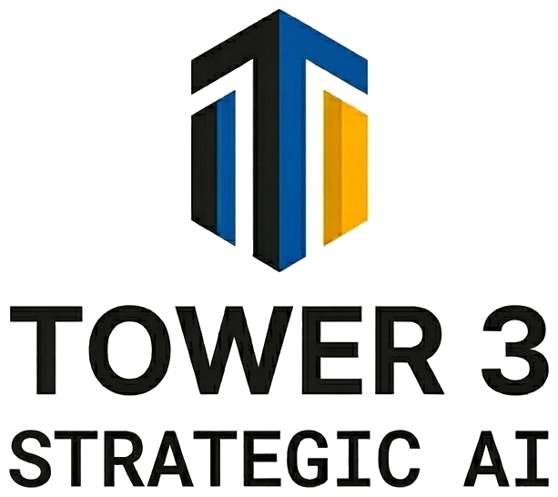

T3-GEN-001 // v3.1

Strategic AI Architect
I don't think in straight lines.
I never have. Early in my career, before personal computers existed, I'd fill yellow pads with ideas that needed to move around — rearranged, reconsidered, rebuilt. Handing those pages off to a typist meant every revision added hours or days. The thinking had to slow down to match the tools — and that was the problem.
When the PC arrived, my boss walked by and asked why I was typing. That was someone else's job, he said. For the first time, I could think at the speed I actually thought. And rearrange as I went.
That moment has repeated itself throughout my career. Every tool evolution has been about closing the gap between how my mind works and what the tools allow. I've spent 40 years building governance frameworks — at Oracle and Salesforce — and the question was always whether the tools could keep up.
They can now.
Tower 3 exists for founder-operators who are in the same position I was with that yellow pad: they can see what needs to happen, they just can't get it built fast enough, or governed well enough, to trust it. I know what that feels like. And I know what it feels like when the right tool finally shows up.
I work in bursts, not straight lines — which turns out to be exactly the right disposition for problems that don't have straight-line solutions.